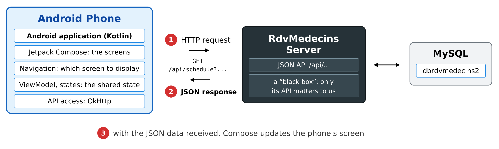

1. Introducción
El PDF del documento está AQUÍ.
El código de este documento está AQUÍ.
Este documento es un producto de Claude, la IA de Anthropic. Adapta el curso “Introducción paso a paso al framework móvil Flutter”, incluidos su estructura, sus 25 ejemplos, su servidor y su caso de estudio, y cambia la herramienta utilizada:
- En el curso [Flutter], la aplicación se escribe en [Dart], con un framework que dibuja él mismo cada píxel de la pantalla, y el mismo código produce una aplicación [Android], [iOS], o web;
- En este curso, la aplicación es una aplicación [Android] NATIVA, escrita en [Kotlin] (el lenguaje recomendado por Google para Android desde 2019), con [Jetpack Compose], la biblioteca declarativa de interfaces de usuario de Android.
El servidor, en cambio, no cambia: es el servidor JSON de [RdvMedecins] escrito en [NestJS], que ya utilizaron los clientes React, Vue.js, Angular y Flutter. Y las pantallas son las que ya conocen los lectores de estos cursos: inicio de sesión con CAPTCHA, la agenda de un médico, una ventana de reserva, el portal del paciente, la gestión de médicos y clientes, la creación de cuentas y la compatibilidad con los idiomas francés e inglés.
Los 25 ejemplos tienen la misma numeración que los del curso [Flutter] (y de los cursos de React, Vue.js y Angular): los lectores que conozcan cualquiera de estos frameworks encontrarán cada concepto en su lugar. Cuando un concepto de [Flutter] no tiene un equivalente directo en [Compose], el ejemplo muestra el enfoque que se usa en [Android] (un formulario escrito con clases normales, recursos [strings.xml] para los textos, deep links en lugar de direcciones web...).
Ya existe un curso sobre este tema: Un ejemplo cliente/servidor - Kotlin Android / NestJS (2026), que presenta un cliente completo desde el principio. Este documento se diferencia en su enfoque: aprendemos [Compose] paso a paso, con ejemplos pequeños, antes de abordar el cliente completo; y el servidor se trata como una caja negra, de la cual solo nos interesan la API y el JSON.
Se supone que ya se conocen los fundamentos del lenguaje [Kotlin] (clases, clases de datos, nulabilidad, lambdas, funciones de extensión, colecciones): se tratan en el curso Kotlin. Las características del lenguaje que son especialmente relevantes para [Compose] (funciones como parámetros, lambdas finales, delegación con [by], interfaces selladas, corrutinas) se repasan a lo largo de los ejemplos a medida que se usan.
Claude escribió todo el código, lo compiló y lo ejecutó en un emulador [Android] en la computadora del revisor, con su autorización; las capturas de pantalla se tomaron durante estas ejecuciones.
1.1. El papel de Android y Compose en una aplicación cliente/servidor
La aplicación tiene dos partes, que se comunican entre sí solo mediante solicitudes HTTP:

- 1: La aplicación [Android], que se ejecuta en el teléfono, envía una solicitud HTTP al servidor, por ejemplo, [GET /api/schedule?doctorId=1&day=2026-10-05];
- 2: El servidor responde con datos JSON: la agenda de este médico para ese día. No genera ninguna página;
- 3: Con estos datos, [Compose] actualiza la pantalla del teléfono.
Esta es exactamente la arquitectura de los clientes [React], [Vue.js], [Angular] y [Flutter]: la única diferencia es lo que genera la visualización. [Jetpack Compose] se basa en los mismos conceptos que [React] y [Flutter]:
- la pantalla se describe mediante FUNCIONES: una función anotada con [@Composable] describe una parte de la interfaz (un texto, un botón, una columna, una pantalla completa) llamando a otras funciones [@Composable]. Forman un árbol;
- la interfaz es una función del estado: cuando cambia un dato observado (un “estado”, [mutableStateOf]), [Compose] vuelve a ejecutar las funciones que lo leen (esto es la RECOMPOSICIÓN) y actualiza la pantalla. Nunca escribimos código que modifique la pantalla: describimos la pantalla como una función del estado;
- un lenguaje moderno, [Kotlin], compilado para la máquina virtual de [Android]: sus lambdas, funciones de extensión y corrutinas hacen natural este estilo de escritura.
A diferencia de [Flutter], [Compose] es específico de [Android] (existe una variante, [Compose Multiplatform], para otras plataformas, pero no se trata aquí). En cambio, la aplicación es una aplicación [Android] “corriente”: utiliza directamente las bibliotecas de Google ([Jetpack]) y los servicios del sistema (idioma de la aplicación, ciclo de vida de las actividades, administrador de contraseñas, etc.).
Al igual que [Flutter], [Compose] no es un framework “todo en uno” para comunicarse con un servidor: el cliente HTTP, la navegación y el estado compartido los proporcionan bibliotecas. Este curso utiliza las recomendadas por Google ([Jetpack]: Navigation, ViewModel, DataStore, AppCompat) y las bibliotecas más utilizadas del ecosistema [Kotlin] ([OkHttp], [kotlinx.serialization]).
1.2. Herramientas utilizadas
Los ejemplos se escribieron y probaron con las siguientes herramientas:
- [Android Studio] (versión Quail 2026.1), el entorno de desarrollo de Google: editor, SDK de [Android], emulador. Incluye su propio JDK ([JBR] 25), que se utiliza para [Gradle];
- [Gradle] 9.6 y el complemento de [Android] (AGP) 9.4, que compilan la aplicación. El propio complemento de [Android] 9 incluye compatibilidad con [Kotlin] 2.2;
- un emulador de [Android] (un Pixel 8, [Android] 17, API 37) o un teléfono [Android] real conectado a la computadora;
- el SGBD [MySQL] (o [MariaDB]), por ejemplo, el de [Laragon] en [Windows], y [Node.js]: son necesarios para el servidor JSON, a partir del capítulo que lo presenta;
- la herramienta de línea de comandos [curl], que muestra las respuestas HTTP sin procesar.
Las bibliotecas utilizadas se declaran en el archivo [gradle/libs.versions.toml] de cada proyecto: “BOM”, [Compose] 2026.02 (Material 3), [Navigation Compose] 2.9, [Lifecycle] 2.9 (ViewModel), [DataStore] 1.1, [AppCompat] 1.7, [OkHttp] 4.12, [kotlinx.serialization] 1.9, [AndroidSVG] 1.4.
1.3. Capturas de pantalla
Las capturas de pantalla de este documento se generaron automáticamente mediante pruebas “instrumentadas” (carpetas [app/src/androidTest] de los proyectos): estas pruebas se ejecutan en el emulador, inician cada ejemplo, interactúan con él como lo haría un usuario (ingresan texto, hacen clic en botones) y luego capturan la pantalla completa. El reloj de la barra de estado está fijo en las 10:00 (el “modo de demostración” de [Android]).
1.4. Los ejemplos
El código de este documento está organizado en tres carpetas:
Los ejemplos forman un único proyecto de [Android Studio] y una única aplicación [Android]: cada ejemplo es una ACTIVIDAD (una pantalla), almacenada en su propio paquete ([fr.stahe.examples.ex01], [fr.stahe.examples.ex02]...), y un menú, la actividad de inicio, permite lanzarlos todos:
Abra la carpeta [examples_kotlin] en [Android Studio] ([File / Open]); [Gradle] descargará entonces las bibliotecas. Inicie la aplicación con el botón [Run] (el triángulo verde): aparece el menú y cada línea abre un ejemplo. También puede iniciar un ejemplo directamente desde una consola con la herramienta [adb] del SDK de [Android]:
Los ejemplos 22 a 25 consultan el servidor JSON de [RdvMedecins]: es necesario tenerlo instalado y en ejecución, como se explica en el capítulo dedicado a él.
1.5. Contenido del documento
- Primeros pasos (ejemplos 01 a 09): una actividad, las funciones [@Composable], el estado ([remember], [mutableStateOf]), eventos, campos de entrada, un reducer, validación, un formulario reutilizable, formato;
- Componentes (10 a 16): parámetros, funciones con parámetros, composición (contenido dentro de parámetros), ciclo de vida y efectos, [CompositionLocal], comportamientos reutilizables (animaciones, funciones [remember...]), ventana de confirmación;
- Navegación (17 y 18): [Navigation Compose], rutas tipadas, parámetros, deep links, guardias;
- Operaciones asíncronas y estado compartido (19 y 20): corrutinas, [Flow], debounce, respuestas obsoletas, [ViewModel], [DataStore];
- Internacionalización (21): recursos [strings.xml], plurales, idioma de la aplicación;
- El servidor, una caja negra: instalación del servidor JSON, su API, ejemplos con [curl];
- Comunicación con el servidor (22–25): [OkHttp], la dirección del servidor, la cookie de token, una capa de acceso a la API, un view model, errores del servidor;
- Caso de estudio: el cliente [Android] de la aplicación [RdvMedecins];
- Despliegue: la aplicación firmada (APK), el servidor de producción.
Cada ejemplo se presenta con su código completo y comentado y con capturas de pantalla de su ejecución. El propio código está ampliamente comentado: estos comentarios forman parte del curso.